La passion des beaux livres d’entreprise.
Créées en 1987, Les Éditions du Mécène se consacrent à la publication de livres d’entreprise. Membre du SNE, le syndicat de l’édition, notre maison d’édition est totalement autonome et offre aux entreprises la possibilité de publier leurs propres livres.
Quarante ans de beaux livres.
Quarante ans que nous créons avec bonheur des livres pour certaines des plus importantes entreprises françaises et étrangères, comme pour des PME et pour des institutions culturelles de renommée internationale.
Fêtes, anniversaires, fondateurs.
Les fêtes de fin d’année, l’anniversaire de l’entreprise, la biographie du fondateur, une importante convention, une opération spécifique de communication…
Expositions, anniversaires.
Une exposition, un anniversaire.
Vos interlocuteurs.
Patrice Cochy de Moncan
Doctorat d’économie, licence d’histoire.
Découvrir son parcoursDebra Finerman
Américaine, diplômée de science politique à UCLA, Master of Art de Christie’s.
International · EnglishEn collaboration avec vos équipes.
Nous réalisons la création de votre livre de A à Z, en collaboration permanente avec vos équipes, dans votre langue, où que vous soyez dans le monde.
Conçus avec un soin particulier, attachés à la qualité des textes comme à celle de l’iconographie et de la présentation, nous créons votre livre de sorte qu’il mérite véritablement le titre de « livre d’art ».
Nous prenons en charge, en symbiose avec vos équipes : le contenu rédactionnel, la traduction si nécessaire et l’iconographie ; la création et la maquette ; l’impression et la reliure.
À sa sortie, votre livre peut, si vous le désirez, être distribué en librairie.
La fidélité de nos clients.
Nous sommes des éditeurs de livres d’entreprise, et nous aimons cela, que nous soyons graphistes, illustrateurs, photographes, maquettistes, rédacteurs, traducteurs ou correcteurs. Nous concevons pour nos clients le livre de leur histoire, de leurs valeurs, de leur production, de leurs services, c’est-à-dire de leur culture et de leur réussite, avant de nous charger de sa fabrication — imprimerie, reliure — et de sa distribution. Nous sommes aussi fiers, outre de la qualité de nos créations, de cette relation directe, unique dans notre domaine, entre vos équipes et les nôtres tout au long du processus d’élaboration de votre livre, qui explique l’extraordinaire longévité de nos « partenariats » avec nos clients : déjà plus de vingt années de collaboration avec Klépierre et BNP Paribas RE (plus de 20 livres réalisés), idem avec la FNAIM (16 livres), quinze années avec Le Louvre des Antiquaires (20 catalogues d’exposition), dix années avec Norbert Dentressangle (6 livres).
BNP Paribas Real Estate
Plus de vingt ans de collaboration et plus de vingt ouvrages, dont 14 rue Bergère, Le Paris d’Haussmann, Paris Avant-Après Haussmann et CityLights.
Ségécé · Klépierre
Plus de vingt ans de collaboration, parmi lesquels D’une Bastille l’Autre, L’Europe à table et plusieurs titres sur les passages couverts.
CNCS
Catalogues liés aux expositions et à la scène : Bêtes de Scène, Christian Lacroix Costumier, Rudolf Noureev, L’Opéra Russe.
FNAIM
Seize ouvrages consacrés à la valeur et à la propriété des villes françaises.
Le Louvre des Antiquaires
Quinze années de collaboration et vingt catalogues d’exposition.
Norbert Dentressangle
Dix années de collaboration et six ouvrages, dont L’Hôpital Royal de Versailles, Les Prisons de Lyon et Grandir, Faire Grandir.
Badoit · Danone
Deuxième édition annoncée en 2025 de Badoit, une Histoire pétillante, réalisée à la demande de Danone et de Saint-Galmier.

Grandir, Faire Grandir.
Un ouvrage réalisé pour le Groupe Dentressangle et publié en janvier 2026 selon les actualités de la maison. Un exemple récent de livre de transmission et de mémoire familiale/entrepreneuriale.
Parler de votre projetNos clients entreprises.


Nos clients institutions culturelles.
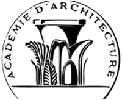
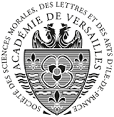
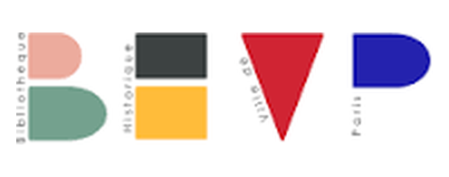
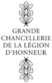
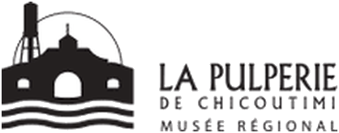
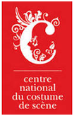
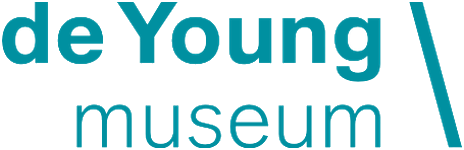
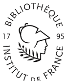
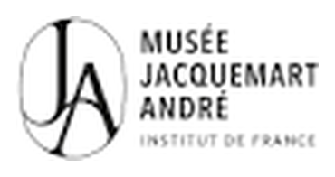
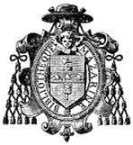
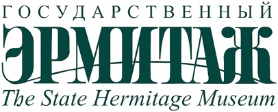
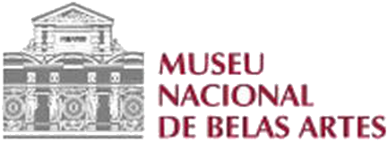
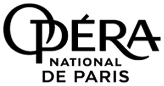
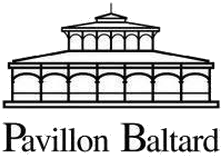
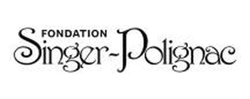
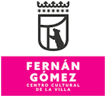
Quelques personnalités ayant signé nos livres.
Jacques Chirac · François Mitterrand
François Hollande, François Rebsamen.
Howard Schultz · Pierre Bergé
Howard Schultz (Starbucks), Pierre Bergé (Yves Saint Laurent).
Martine Kahane · Bruno Racine
Martine Kahane (Opéra de Paris), Bruno Racine (Bibliothèque nationale de France), Mikhaïl Piotrovski (musée de l’Ermitage).
Trois façons de publier.
Trois possibilités de collaboration s’offrent à vous avec Les Éditions du Mécène.
Votre propre livre
Votre propre livre, qui décrira l’histoire de votre entreprise, sa culture, ses hommes et ses activités.
Mécénat de création
Mécéner la création d’un livre sur le sujet de votre choix.
Personnalisation
Mécéner un livre à paraître, totalement personnalisé aux couleurs de votre entreprise.
Des ouvrages primés.
Plusieurs récompenses obtenues pour des ouvrages publiés, parmi lesquelles :
Prix international du livre de gastronomie
Histoire de la Gastronomie · Ségécé
Prix du livre d’art de la Ville de Paris
L’Europe à table · Klépierre
Grand Prix Haussmann · FNAIM
Le Paris d’Haussmann · BNP Paribas Real Estate
Prix Charles Garnier
Société de Géographie · Le Paris d’Haussmann · BNP Paribas Real Estate
Grand Prix du Livre d’Art · Musée d’Orsay
L’Opéra russe avant les ballets russes · CNCS
Grand Prix du beau-livre pour la musique · SACEM
L’Opéra russe avant les ballets russes · CNCS
Département international.
Dirigé par Debra Finerman, notre département international accompagne les entreprises et institutions hors de France, dans leur langue. Your book about your firm, history, unique business culture and perspective.
Read in English